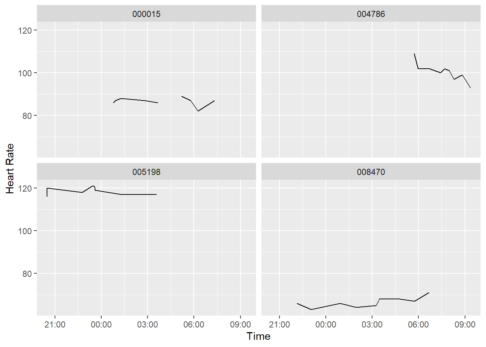
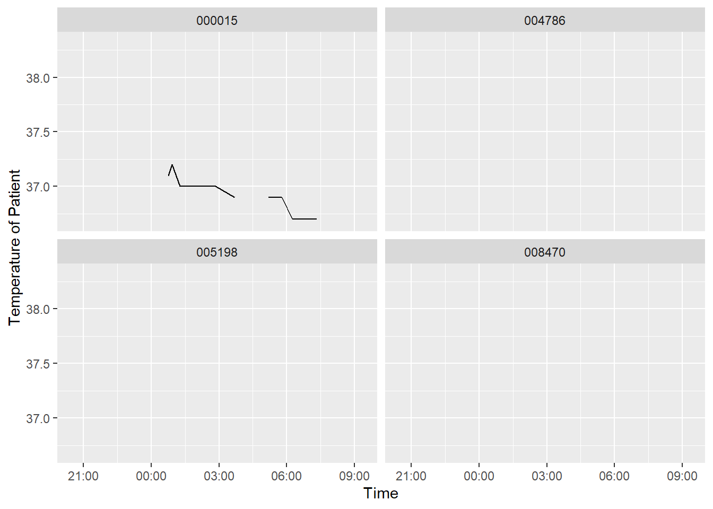
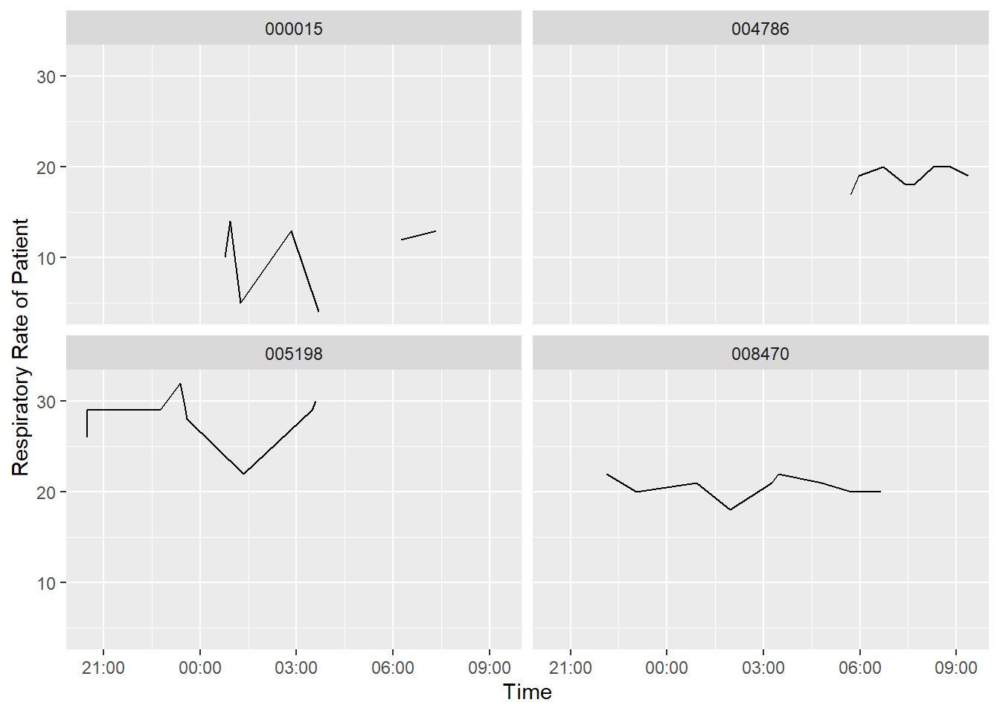

[1] "Report generated on 2023-04-09 11:46:46"Patients Currently with Sepsis
| PatientID | Temp | Resp | HR |
|---|---|---|---|
| 000015 | 36.7 | 13 | 87 |
| 004786 | NA | 19 | 93 |
| 005198 | NA | 30 | 117 |
| 008470 | NA | 20 | 71 |
Medical History of Patients with Sepsis

Warning: Removed 3 rows containing missing values (`geom_line()`).

Change in heart rate, temperature, and respiratory rate between the last two measurements for all patients
library(gtExtras)
second_recent_data <- new_data %>%
group_by(PatientID) %>%
filter(obsTime != max(obsTime))
second_recent_data <- second_recent_data%>%
group_by(PatientID) %>%
filter(obsTime == max(obsTime))%>%
ungroup()
second_recent_data$HRDiff <- most_recent_data$HR - second_recent_data$HR
second_recent_data$TempDiff <- most_recent_data$Temp - second_recent_data$Temp
second_recent_data$RespDiff <- most_recent_data$Resp - second_recent_data$Resp
second_recent_data%>%subset(select = c("PatientID", "HRDiff", "TempDiff", "RespDiff"))%>%
gt()| PatientID | HRDiff | TempDiff | RespDiff |
|---|---|---|---|
| 000015 | 5 | 0.0 | 1 |
| 000503 | 4 | NA | -4 |
| 000837 | NA | NA | NA |
| 000902 | 7 | NA | -3 |
| 001315 | -15 | NA | -13 |
| 001663 | 8 | NA | 0 |
| 001899 | 0 | NA | 2 |
| 002577 | -3 | NA | -4 |
| 002597 | 5 | NA | 1 |
| 002603 | -8 | NA | 1 |
| 002616 | -2 | NA | 3 |
| 002865 | -2 | NA | 20 |
| 002994 | 0 | -0.1 | NA |
| 003081 | NA | NA | NA |
| 003128 | -9 | NA | -8 |
| 003268 | NA | NA | NA |
| 003297 | NA | NA | NA |
| 004129 | 4 | NA | 0 |
| 004307 | -3 | NA | -4 |
| 004786 | -6 | NA | -1 |
| 004959 | -5 | NA | -1 |
| 004972 | NA | NA | NA |
| 005025 | NA | NA | NA |
| 005031 | -7 | NA | -5 |
| 005165 | 0 | NA | 6 |
| 005198 | 0 | NA | 1 |
| 005226 | 1 | NA | 0 |
| 005382 | 2 | NA | -1 |
| 005490 | NA | NA | NA |
| 005947 | 1 | NA | NA |
| 006142 | 0 | NA | 1 |
| 006489 | -7 | NA | 2 |
| 006832 | 4 | NA | NA |
| 006869 | NA | NA | NA |
| 006950 | -8 | -0.1 | 3 |
| 007120 | 0 | NA | 0 |
| 007370 | 1 | NA | -1 |
| 007393 | NA | NA | NA |
| 007454 | NA | NA | NA |
| 008470 | 4 | NA | 0 |
| 008498 | NA | NA | NA |
| 008602 | 4 | NA | NA |
| 008776 | 2 | NA | 4 |
| 009039 | 1 | NA | 8 |
| 009498 | 6 | NA | 1 |
| 009525 | NA | NA | NA |
| 009584 | 2 | NA | 3 |
| 009698 | -4 | NA | 2 |
| 009902 | NA | NA | NA |
| 009971 | NA | NA | NA |